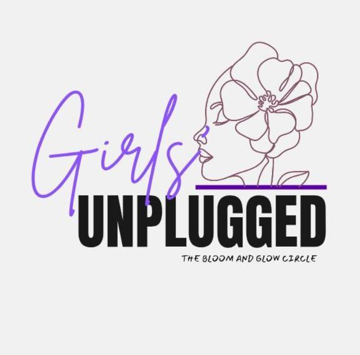
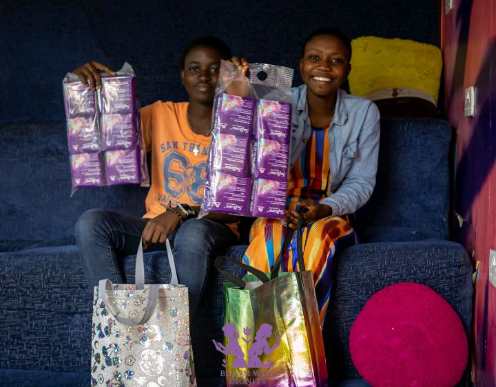

Mentorship
Supporting younger learners through mentorship and helping students navigate opportunities and learning experiences.
IMPACT & PROJECTS
Some of my work happens on stages. Some happens in classrooms. Some happens quietly inside online communities.

FOUNDED BY ME · COMMUNITY
Girls deserve a safe space created by girls, for girls.
Girls Unplugged: Bloom and Glow Circle is a girl-led online community founded by Motunrayo Linda Idowu in 2025 to bring girls from different backgrounds and countries together.
We connect, talk, laugh, learn, reflect and grow through activities such as Wellness Wednesdays, Motivation Mondays, Fun Fridays, game nights, guest speaker sessions and community conversations.
The community has grown to approximately 100 girls.
The idea for Girls Unplugged came from my own experiences as a girl and from noticing how often girls need a space where they can simply be themselves. There are conversations we want to have, questions we are afraid to ask, and experiences we sometimes think we are the only ones going through. I wanted to create a space where girls could talk openly, learn from one another, and feel comfortable knowing that they were not alone.
I also wanted girls to meet people beyond the environments they were used to. I had experienced how much it can change your perspective when you meet people from different backgrounds, hear their stories, and realise how much you actually have in common. So I imagined a community where girls from different countries could connect, make friends, share experiences, learn together, and grow alongside one another.
That became Girls Unplugged: Bloom & Glow Circle — an online, girl-led community built around connection, sisterhood, learning and fun. We created activities like Motivation Mondays, Wellness Wednesdays, Fun Fridays and game nights, Reflection Saturdays, guest speaker sessions and community conversations. I wanted it to be more than a series of activities; I wanted girls to feel that they genuinely belonged somewhere.
What makes the journey especially meaningful to me is that I started it with very little. There was no big organisation behind me or perfect setup. I started Girls Unplugged from my bed, with what I had. As it grew, I learnt how to build a community, work with a team, create activities, listen to members and keep showing up even when things did not go exactly as planned.
Today, Girls Unplugged has grown into a community of approximately 90–100 girls, but I see it as something that is still becoming. For me, it is a reminder that you do not need to have everything figured out before you start creating something meaningful. Sometimes, all you need is a genuine desire to make a difference, the courage to begin, and the willingness to keep learning along the way.

GIRLS IN BLOOM
Bloom With Dignity was a girls-focused initiative developed through my Girls in Bloom experience.
As team lead, I worked with a team of five young women from Nigeria, Kenya, Mozambique and Zimbabwe.
The initiative focused on menstrual health and hygiene, access to menstrual products and HPV vaccine awareness.
The project reached approximately 70+ girls.
For me, the most meaningful part was moving from learning about leadership to actually putting that learning into action.

TECHNOLOGY · IN DEVELOPMENT
An idea born from the problem I experienced myself.
Finding scholarships, programmes, fellowships, internships, volunteering opportunities and other opportunities as a student can be difficult.
LUMINDA is my attempt to explore a technology-based solution.
The vision is to create an ecosystem where students and young people can discover opportunities, build profiles, organise their experiences and present their work.
Status: In development.
It is still being built and has not launched yet.
Supporting younger learners through mentorship and helping students navigate opportunities and learning experiences.
Participating in school assembly outreaches and conversations with young people around SRHR, SBCC, relationships and personal development.
Contributing to youth and education-focused organisations through communications and storytelling.